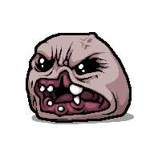

Isaac floor generator
Generates floors the same way Repentance does, drawn with the game’s own sprites.
- Floor
- Basement I
- Rooms
- 0
- Seed
- 1

Monstro
The floor from above, replayed step by step.
13 x 13
Every floor is built on a 13×13 grid with the start room in the middle. First the game picks how many rooms to place: 5, plus 0 or 1 at random, plus the floor number × 10 / 3, capped at 20.
2 in 3
Rooms are placed from a queue. A new room goes to the front of the queue 2 times out of 3, which is why floors tend to stretch out in long branches. Each room tries to add up to four neighbours (one coin flip per side); the start room gets two or three.
1 in 72
A 1×1 is always an option. Bigger shapes each have their own chance: 1 in 24 for a 2×2, down to 1 in 72 for some L rooms. Narrow rooms can only be placed in the direction their doors point.
1 neighbour
A new room may only touch the room it was added from. If it would touch any other room, that room needs a door on that side, otherwise the spot is rejected. This keeps narrow rooms from having rooms against their walls.
6 dead ends
A dead end is a room with nothing after it. A floor needs at least six (five on the first floor), or it gets rerolled. They are sorted by distance from the start, and the farthest go to the boss, then the super secret room, the shop and the item room. Each special room picks its layout first and then reshapes a dead end to fit it.
1 in 50
On the first floor of a chapter there is a 1 in 10 chance of a horseman. Double Trouble (two bosses in one long room) has a 1 in 50 chance in the Caves, 1 in 25 in Depths I and 1 in 40 in Womb I.
+20%
The base chance is 1%, plus 20% for every item room you skipped on earlier floors. It can’t appear after Depths II. It takes a dead end before rolling; if the roll fails, that dead end goes to the back of the list.
10 to 14
Every empty cell gets a random score from 10 to 14, minus 3 if it touches only two rooms or minus 6 if it touches one. The highest score gets the secret room. The ultra secret room goes two cells away from the floor and touches no room.
| Roll | Odds | When | Source |
|---|---|---|---|
| Bigger room shape | 1 in 24 to 72 | Each shape, for each free door | Game code |
| New room goes to the front of the queue | 2 in 3 | Every room placed | Game code |
| Horseman boss | 1 in 10 | First floor of a chapter | Game code |
| Double Trouble | 1 in 25 to 50 | Caves, Depths I, Womb I | Game code |
| Planetarium | 1% + 20% | Per skipped item room, up to Depths II | Game code |
| Dice or sacrifice room | 1 in 7 | Extra 1 in 4 at full health | special_rooms.lua |
| Library | 1 in 20 | Any floor | special_rooms.lua |
| Curse room | 1 in 2 | Any floor | special_rooms.lua |
| Miniboss room | 1 in 4 | Second roll after the first floor | special_rooms.lua |
| Arcade or vault | Always | Even floors with 5 coins | special_rooms.lua |
| Bedroom | 1 in 50 | Extra 1 in 5 at one heart or less | special_rooms.lua |
isaac-ng.exe, decompiled with Ghidra.rooms/00.special rooms.stb and bosspools.xml from the game files.resources folder.